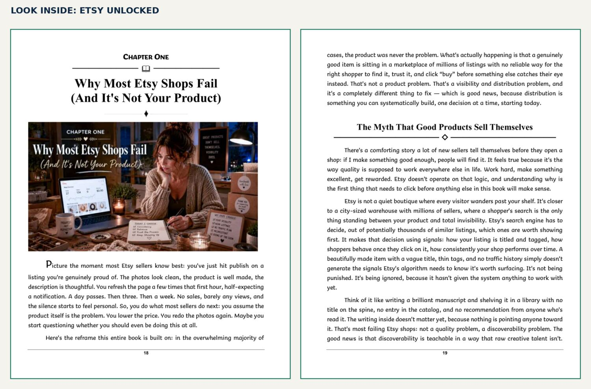

Make listings easier to find
Work on titles, tags, attributes, images, and descriptions so a relevant shopper can find and understand what you sell.

Your products deserve to be found. Build the listings, free traffic, and measured advertising that help the right shoppers discover your Etsy shop.
A hands-on, 34-chapter guide for sellers building a business alongside the rest of life. It connects Etsy search, product presentation, traffic, and shop data into a practical sequence you can work through at your own pace.
When a listing receives little attention, the next step is to find out where shoppers lose sight of it. Etsy Unlocked helps you examine the path from a search result to a product page to a purchase, then strengthen each part of that path. The approach is built for handmade goods, vintage finds, craft supplies, digital downloads, and print-on-demand products.
Work on titles, tags, attributes, images, and descriptions so a relevant shopper can find and understand what you sell.
Build repeatable ways to bring people to your products through content, Pinterest, social channels, email, and search.
Read your shop data and decide when paid traffic can help a listing that already has a solid foundation.
The 34 chapters include actions you can apply to your own shop. The book covers the work that often gets split across disconnected advice:
Understand how relevant keywords, titles, tags, categories, and attributes work together in a listing.
Improve photographs, opening lines, product details, and customer trust once someone sees your item.
Explore Pinterest, social content, email, and discoverable content without making ads your first move.
Use views, visits, and conversion clues to choose what to improve and whether an ad campaign is worth testing.
The opening chapter examines a frustration many Etsy sellers know: putting care into a product and hearing nothing after publishing the listing. It begins with the difference between product quality and discoverability, then moves into actions sellers can take.

These links go directly to the seller’s listing. Each opens in a new tab so you can return to the book details here.
Want a companion tool? The Etsy Shop Master Checklist ↗ is a separate downloadable product for tracking shop improvements.
No. Its core approach also covers vintage items, craft supplies, digital products, and print on demand, with attention to where each category differs.
No. The book starts with listings and free traffic. It discusses paid promotion after you have a stronger foundation and a reason to test it.
Both are digital ways to read the guide. Kindle is purchased through Amazon; the PDF is an instant download from the Open Theory Cove Etsy shop.
No guide can promise sales. This one gives you a process for diagnosing visibility, improving your shop, and checking what changes are working.
Published by Open Theory Cove · English · Building Wealth Series · Paperback ISBN 9798182386807 · Kindle ASIN B0H73F551T